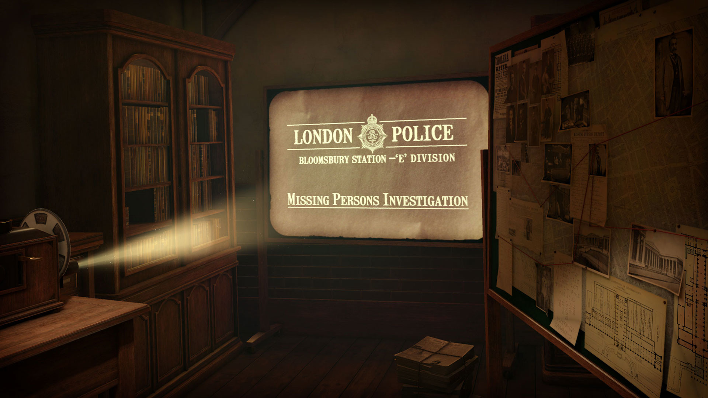

I unfortunately, did not even get close to finishing the case and
solving the murder mystery for this assignment. This is because I didn’t
have the interest in the game and couldn’t get past the first room after
days and hours of trying, since these kinds of games aren’t my cup of
tea. Which has lead to me believe that it is possible that some virtual
reality applications in the future could be less captivating, much like
how it can be sometimes in a real classroom setting. However, everyone
has their own judgement on which apps they like, therefore I am not
judging one bit. I just didn’t feel the excitement nor reward after
solving some of the puzzles. It was also difficult for me to go by since
sometimes my items would glitch and not work, hence why I gave up on
this case.
